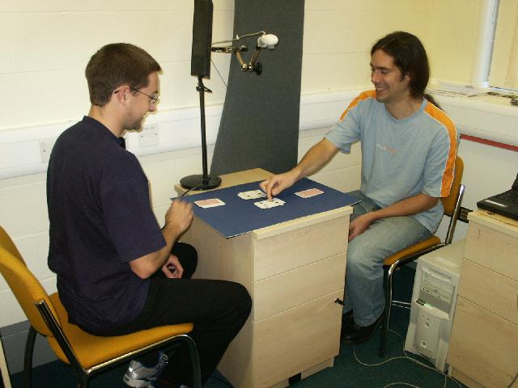
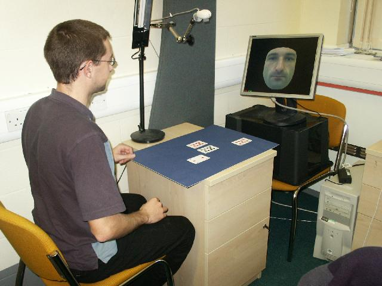

|
CogVis: Learning games from observation |
In this piece of work we are attempting to learn descriptions of objects and events in an entirely autonomous way. Our aim is zero human interference in the learning process, and only to use non scene specific prior information. The resulting models (object and protocol) are used to drive a synthetic agent that can interact in the real world.
|  |  |
| Two humans playing a table top game | A human playing against a learned virtual player |
The game paper-scissors-stone is played by two players each with three cards. First a training phase is observed by the computer in which two players each place a card on the table, and one player describes the result through the utterances (play, win, draw, & lose). TRAINING MOVIE (Mpeg 45MB). In this phase objects are detected and clustered without supervision from the video stream (from the camera at the top left of the movie, real-time tracking can be seen on the monitor), and utterances are detected and clustered without supervision from the audio stream. Next the (symbolic) protocols of the game a learned using inductive logic programming, and an autonomous cognitive agent is formed. The system is now able to interact with a player, and automatically decide which vocal response/command to utter. This can be seen in the COGNITIVE AGENT MOVIE (Mpeg 67MB). The player in view is now responding to the commands of the agent and says nothing himself.
On another run of `Paper, Scissors, Stone', a talking head is incorporated to add realism to the synthetic agent. These movies contain sound, which is essential for viewing. First the Training phase (AVI 27MB). Once learning is complete, then in the Playing phase (WMV 8MB) the agent makes all the vocal utterances (and the head speaks them). Waiting head example (AVI 8MB) shows the head whilst it waits for an action to occur. A close up of the response from the head when driven by the perceptual inputs can be seen in Talking head close up (AVI 32MB).
Needham, Chris J; Santos, Paulo E; Magee, Derek R; Devin, Vincent; Hogg, David C; Cohn, Anthony G. Protocols from perceptual observations. Artificial Intelligence, vol. 167, pp. 103-136. 2005.(PDF) Also, the symbolic data used in the paper may be downloaded from here.
Magee, D R; Needham, C J; Santos, P E; Rao, S. Inducing the focus of attention by observing patterns in space in: IJCAI Workshop on Modelling Others from Observations (MOO 2005), pp. 47-52. 2005. (PDF)
Magee, D R; Needham, C J; Santos, P; Cohn, A G; Hogg, D C. Autonomous learning for a cognitive agent using continuous models and inductive logic programming from audio-visual input in: Proceedings AAAI-04 Workshop on Anchoring Symbols to Sensor Data, pp. 17-24. 2004. (PDF)
Magee, D. Tracking multiple vehicles using foreground, background and motion models. Image and Vision Computing, vol. 22, pp. 143-155. 2004.
Santos, Paulo; Magee, Derek; Cohn, Anthony; Hogg, David. Combining multiple answers for learning mathematical structures from visual observation in: Lopez de Mantaras, R & Saitta, L (editors) ECAI 2004 Proceedings of the 16th European Conference on Artificial Intelligence, pp. 544-548 IOS Press. 2004. (PDF)
Santos, P; Magee, D; Cohn, A G. Looking for logic in vision in: Proceedings Eleventh Workshop on Automated Reasoning, pp. 61-62. 2004.
{kind=link}